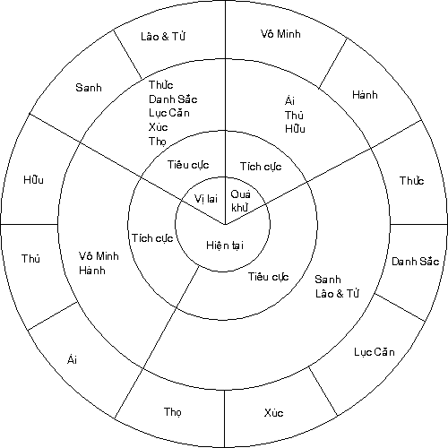
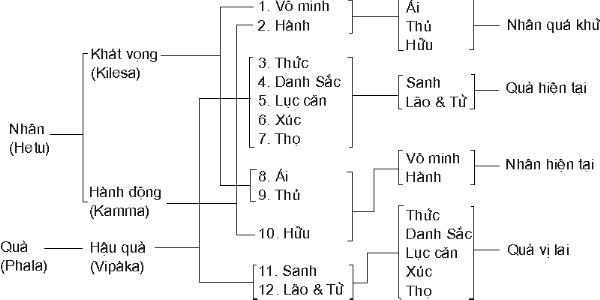

|
BuddhaSasana Home Page |
Vietnamese, with Unicode Times font |
Phật Pháp Giảng Giải
Nguyên tác: "Essential
Themes of Buddhist Lectures",
Venerable Sayadaw Ashin U Thittila
|
Bài 28:
THẬP NHỊ NHÂN DUYÊN


Ðề tài giảng hôm nay, hiển nhiên như bức sơ đồ trên bảng đen đã trình bày, là pháp Thập Nhị Nhân Duyên (Paticcasamuppàda). Paticcasamuppàda là một từ Pàli có nghĩa Pháp Duyên Khởi, hay Tuỳ Thuộc Phát Sanh; nghĩa là sự khởi sanh của một trạng thái tuỳ thuộc vào trạng thái đi trước nó. Bài pháp Thập Nhị Nhân Duyên này là một trong những bài pháp nổi tiếng nhất và quan trọng nhất của Phật pháp, bởi vì không có phương diện giáo pháp này thì muốn hiểu được tại sao và làm thế nào người ta lại trở thành một chúng sanh, một con người là điều khá nan giải. Pháp Duyên khởi này chủ yếu trả lời cho ba câu hỏi lớn đã từng làm bối rối đức Bồ Tát (vị Phật của chúng ta) trước khi Ngài thành Phật. Khi còn là một vị Bồ Tát, trải qua vô số kiếp thực hành mọi loại khổ hạnh để mong tìm ra sự thật (chân lý), ngài đã tìm đến rất nhiều triết gia và thiền sư nổi tiếng thời đó, để rồi từ nơi họ ngài nhận được đủ mọi lời giải đáp. Câu hỏi đầu tiên trong số ba câu hỏi lớn đó là: "Chúng ta từ đâu đến?". Ðang ngồi nơi đây, chiều nay, quý vị có thể sẽ nói là: "Tôi từ nhà đến, từ căn hộ của tôi tới, v.v...". Thế nhưng, đây không phải là câu hỏi được hỏi theo cách thông thường như vậy, mà là "từ đâu chúng ta đến thế gian này, đi vào cuộc sinh tồn này?". Quý vị nghĩ là mình có thể trả lời được câu hỏi này không? Trải qua vô lượng kiếp Bồ Tát đã đi tìm câu trả lời, nhưng không một vị luận sự hay triết gia nào vào thời kỳ đó, những người mà ngài tìm đến tham vấn đã từng khả dĩ cho Ngài một câu trả lời thoả đáng; đối với câu trả lời này, một số người bảo rằng nếu như Ngài muốn biết mình từ đâu đến thì ngài phải hiểu được khởi thủy của cuộc sống đã. Có cả thảy 62 quan kiến hay những tà kiến sai lầm về sự hiện hữu, về chúng sanh từ đâu đến và khởi thủy của cuộc sống là như thế nào. Tuy nhiên, để bàn về 62 tà kiến này chúng ta phải mất khá nhiều thời gian, do vậy bần tăng sẽ rút ra ba quán niệm mà đức Bồ Tát đã nhận được từ nơi các triết gia hay những bậc đạo sư nổi tiếng thời đó. Quan kiến thứ nhất chủ trương rằng khởi thủy của cuộc sống là do định mệnh của con người. Con người phải tin tưởng nơi định mệnh mà không thể tự mình làm khác hơn được, nói chung con người hoàn toàn tuỳ thuộc vào định mệnh của mình. Quan kiến này cho rằng sự khởi đầu của cuộc sống là do định mệnh, do vậy bất cứ việc gì xảy đến, thì âu đó cũng là định mệnh! Và chúng ta không thể làm điều gì để chuyển đổi cái số phận này được. Trong Pàli, quan kiến này được gọi là Sahetuka (Hữu Nhân Thuyết), nghĩa là nguyên nhân có sự hiện hữu của con người, hiệu quả là chúng ta không thể vạch ra một dự định nào để phát triển cá nhân sao cho thoát khỏi mọi khổ đau. Và gì là khổ? Chúng ta đã biết bài kinh Chuyển Pháp Luân (Dhammacakkapavattana Sutta) nổi tiếng, đây là bài pháp đầu tiên do Ðức Phật thuyết, trong đó ngài giải thích Bốn Chân Lý Cao Thuợng (Tứ Diệu Dế): Khổ, Tập, Diệt, Ðạo. Trong Thập Nhị Nhân Duyên (Paticcasamuppàda) khổ này cũng được giải thích, ở đây bài kinh trình bày vấn khổ đi kèm với sanh (Jàti). Sanh là khổ, cứ ngẫm nghĩ đến sự sanh của chúng sanh thì rõ, nó gian nan đau khổ biết dường nào! Cái trạng thái khi còn ở trong bụng mẹ như một bào thai thật đáng ghê sợ, khởi đầâu với một chấm nhỏ, nhỏ đến nỗi không có một loại kính hiển vi nào có thể giúp ta nhận ra nó cả, sau đó chấm nhỏ này dần dần phát triển, trong một vài trường hợp thì bảy tháng, có khi tám tháng hoặc chín tháng nằm trong bụng mẹ, đó là khổ sanh. Nếu như phải sống trong một căn nhà chật hẹp, chúng ta có thể than thở là "Ôi! Sao mà căn nhà này hẹp quá, chật chội quá!. Một căn nhà như vậy chắc chắn không có gì thoải mái và chúng ta được xem là những người không giàu có mấy nếu như phải sống trong những điều kiện thiếu thốn như vậy. Tuy nhiên, thử hình dung khoảng trống mà bạn được dành cho khi còn là bào thai trong bụng mẹ xem! Khổ sanh còn phải đi kèm theo bởi già (Jàra), chết (Byàdhi), tiêu hoại, sầu muộn, bi ai, đau đớn về thể xác, buồn rầu và tuyệt vọng, và nhẹ hơn một tí so với những nỗi khổ đó là: khổ vì phải xa lìa người mình thương mến, khổ vì phải gần gũi kẻ mình không ưa, khổ vì không đạt được điều mình mong muốn v.v... đó là khổ. Trừ khi người ta hiểu được Pháp Duyên Khởi (Paticcasamuppàda) này, bằng không họ không thể hiểu được bản chất thực cũng như chức năng của nhân và quả, nguyên nhân của khổ, khổ khởi sanh như thế nào? Trong pháp hành có một giai đoạn, ở đây hành giả được thoát khỏi hoài nghi về sự hiện hữu của mình, điều này một lần nữa xác định ý nghĩa của việc hiểu biết Pháp Duyên Khởi, một tri kiến đúng đắn về pháp nhân quả giúp hành giả không còn hoài nghi về điều tại sao và bằng cách nào họ lại sanh ra và diệt mất như một con người. Nhưng bây giờ chúng ta hãy quay lại với câu hỏi của đức Bồ Tát để tìm câu trả lời "chúng ta từ đâu đến?" như đã đề cập ở trên, quan kiến thứ nhất mà một trong những triết gia nổi tiếng thời đó chủ trương là sự khởi đầu cuộc sống hoàn toàn do định mệnh. Câu trả lời thứ hai mà đức Bồ Tát nhận được là cuộc sống khởi sự hay đã khởi sự hoàn toàn không có duyên cớ nào cả, tất cả chỉ là chuyện tình cờ, không có nguyên nhân. Quan kiến thứ ba cho rằng khởi đầu của cuộc sống thực ra chẳng phải do định mệnh cũng kh phải vô nhân, mà khởi đầu của cuộc sống chính là do một đấng sáng tạo (Sáng tạo chủ), một đấng tối cao đã tạo ra nó. Như vậy với quan kiến thứ ba cho rằng khởi đầu của cuộc sống là do sự sáng tạo của một Ðấng Tối Cao, Thượng Ðế toàn năng. Ðức Bồ Tát đã nhận được ba câu trả lời khác nhau từ các vị triết gia nổi tiếng thời đó, nhưng không có câu trả lời nào làm cho đức Bồ Tát thoả mãn cả. Nếu một đấng tối cao là nhân, bản thân ông ta cũng phải có nhân nữa. Không có nhân ông ta sống như thế nào? Ai ban cho ông ta cái quyền sáng tạo đó? Giả sử cứ cho là ông ta có được cái quyền vô hạn đó đi, thử hỏi cái quyền đó từ đâu đến, nguồn gốc hay ông ta khởi sự như thế nào? Phải chăng không có một Ðấng Quyền Năng Cao Thượng hơn tạo ra ông v.v...? Nếu quý vị nói: "Ồ! đó là chuyện bình thường, đó chỉ là điều tự nhiên", như thế quý vị cũng có thể tự nói về mình theo cách đó cũng được, nghĩa là: "Tôi đến cuộc đời này một cách tự nhiên thôi"; thế nhưng điều đó vẫn không đáp ứng được cho câu hỏi đâu là nguyên nhân, điều kiện tiên khởi nào đã khiến cho một câu chuyện bình thường tự nhiên như vậy khởi sanh. Phải đến khi Bồ Tát thấu triệt Giáo Lý Duyên Khởi, vòng luân hồi sanh tử hay tiến trình tương tục của nhân và quả này, Ngài mới có thể tìm ra câu trả lời cho ba vấn đề chính yếu vừa kể. Nhìn lên tấm sơ đồ trên bảng đen, chúng ta có thể thấy một vòng tròn lớn mô tả vòng sanh tử luân hồi. Bánh xe gồm 12 chi phần liên kết với nhau thành một chuỗi, liệu chúng ta có thể nói đâu là điểm khởi đầu, đâu là nơi kết thúc được không? Về câu trả lời thứ hai của đức Bồ Tát là "Tại sao chúng ta lại ở đây (thế gian này)?" Tại sao chúng ta lại sinh ra làm người trong cái thế gian này, tại sao? Chúng ta hoàn toàn không biết, hay biết không hơn gì câu hỏi chúng ta từ đâu đến, hàng phàm phu bình thường làm sao có thể hiểu được câu trả lời này. Và câu hỏi thứ ba là "Chúng ta sẽ đi về đâu?" đối với câu hỏi thứ nhất, câu trả lời ngắn gọn là "Chúng ta từ đâu đến?" chúng ta từ quá khứ tới, cũng như ngày hôm nay xuất phát từ ngày hôm qua vậy, cuộc đời này là kết quả của đời sống đã qua (trước kiếp sống này). Chúng ta đến từ những gì chúng ta đã làm trước đây, từ những công việc trong quá khứ mà chúng ta chưa hoàn tất, nếu công việc đã hoàn tất chắc chắn chúng ta sẽ không có mặt ở đây, chúng ta sẽ hiện hữu ở một nơi nào đó cao hơn (thế gian này). Chúng ta đến từ những cái xấu và những cái tốt trong quá khứ, những cái thiện và ác chúng ta đã tích luỹ, từ nơi tối tăm của vô mình và từ những tham muốn riêng tư của chúng ta. Chúng ta muốn, chúng ta khao khát được sống ở đây, và chúng ta còn muốn đến nữa, chúng ta khát khao mãnh liệt muốn đến, nhưng đến trong một tư thế hoàn hảo hơn về thể chất, về tinh thần, về tình cảm cũng như đạo đức - dù sao chăng nữa cũng khá hơn một chút, nếu không muốn nói quá nhiều. Về phương diện của cải chúng ta mong ước, chúng ta khao khát được giàu có hơn, thân hình đẹp đẽ hơn v.v.... Như vậy chúng ta đã đi vào kiếp hiện tại, đem theo mình vô số những cái xấu và tốt mà chúng ta đã tích luỹ, chẳng thế mà đôi lúc chúng ta có thể làm những điều xấu, nhưng cũng có khi chúng ta làm được những điều kỳ diệu, những thiện nghiệp. Trong Pháp Duyên Khởi (Paticcasamuppàda) đã giải thích cho chúng ta thấy cái tiến trình này vận hành như thế nào. Nhưng bây giờ tiếp tục bàn đến câu hỏi thứ hai "Tại sao chúng ta lại ở đây?" sở dĩ chúng ta hiện diện ở cõi này là vì quá khứ, quá khứ sanh ra hiện tại, và từ hiện tại tương lai được sanh ra. Chúng ta được đưa tới thế gian này là do những vui buồn trong quá khứ mình đã tạo, tuy nhiên đa số chúng ta đều bị tham ái dẫn dắt tới đây, và ở đây chúng ta lưu lại. Trong bao lâu? Cho đến khi cái tham muốn cuối cùng được trừ diệt; tham muốn cho cái bản ngã này: "Tôi muốn", "Tôi có một ước muốn thực hiện điều này, điều kia..." vô số những ước muốn như vậy. Tất cả những tham muốn đó cần phải được trừ diệt hoàn toàn, nếu còn chút tham muốn nào, chúng ta vẫn chưa thể đạt tới Niết Bàn được. Ðối với bậc hiền trí, cuộc sống mà họ đang sống ở đây là cơ hội để họ buông bỏ cái gánh nặng trong quá khứ họ đã tích luỹ, buông bỏ những việc sai lầm, những tà kiến, buông bỏ những quan niệm không đúng về sự sống và chết, và dứt khoát buông hết lại phía sau để bước chân lên Bát Chánh Ðạo. Trong khi chúng ta giờ này vẫn còn ở đây, trở đi trở lại mãi trong thế gian này. Ðể trả lời cho câu hỏi thứ ba "Chúng ta sẽ đi về đâu?" Chúng ta sẽ đi theo quả của những nhân chúng ta đã gây ra, kết quả của những hành động hay nghiệp mà chúng ta đã tạo ra, với những ai chưa làm xong phận sự trong thế gian này sẽ phải xoay quanh bánh xe sanh tử, trong pàli còn gọi là samïsàra. Samïsàra có nghĩa là trôi lăn theo bánh xe cuộc đời hay xoay vần trong vòng sanh tử luân hồi. Vì vậy, người chưa hoàn tất việc cần phải làm sẽ phải luân hồi trở lại để hoàn tất phận sự của mình. Những ai đi theo Trung Ðạo (Bát Chánh Ðạo) và hoàn tất việc phải làm của mình sẽ đạt đến trạng thái Niết Bàn, diệt tận mọi khổ đau. Chí đến khi Bồ Tát, trước khi thành Phật, thấu triệt đầy đủ Pháp Duyên Khởi. Ngài vẫn liên tục đi tìm câu trả lời cho ba vấn đề trọng đại trên, những điều đã luôn luôn gây bối rối cho ngài. Trong vòng luân hồi này, chúng ta khởi sự như thế nào? Nếu tham khảo sơ đồ, chúng ta sẽ thấy trên đó vô minh (Avijjà) là khởi điểm của cuộc sống. Cuộc đời này bắt đầu bằng một điều không lấy gì dễ chịu lắm, đó là vô minh hay si mê. Do si mê chúng ta đi vào cuộc sống, nếu có trí tuệ chắc chắn chúng ta sẽ không có mặt ở đây. Tuy nhiên, khi lấy vô minh (Avijjà) làm điểm khởi đầu trong vòng luân hồi, dĩ nhiên vấn đề sẽ phát sinh là cái gì là nhân của vô minh? Câu trả lời sẽ hạ hồi phân giải, vòng luân hồi hay pháp duyên khởi không phải để trình bày khởi điểm cùng tột, sự bắt đầu của vòng sanh tử luân hồi (Samïsàra - Ta bà), nó chỉ trình bày cho chúng ta thấy khởi sự của kiếp hiện tại, kiếp sống mà chúng ta đang sống và sự liên hệ của kiếp sống hiện tại với kiếp quá khứ và tương lai. Vì vậy, trong vòng tròn này chúng ta khởi đầu ở vô minh. Vô minh về cái gì? Vô minh (si mê) chủ yếu là về Tứ Diệu Ðế, vô minh về Pháp Duyên Khởi (Paticcasamuppàda), vô minh về quá khứ và hiện tại của chúng ta. Nếu chúng ta thực sự thấu triệt Bốn Sự Thực Cao Quý (Tứ Diệu Ðế) chúng ta sẽ đạt đến Niết Bàn, chúng ta sẽ có trí tuệ. Thế nhưng, trong vòng Thập Nhị Nhân Duyên hay Pháp Duyên Khởi này, chúng ta chỉ đề cập đến trạng thái hợp thế, bởi vì cho đến nay chúng ta vẫn còn là phàm phu; Pháp Duyên Khởi không đề cập đến các trạng thái siêu thế trong đó Niết Bàn là đối tượng của tâm. Như vậy, ở đây chỉ trình bày vòng luân hồi của hàng phàm phu hay những chúng sanh bình thường. Puthujjana (phàm phu), bị bao phủ bởi một lớp tham, sân, si dày đặc, vì thế cho nên hạng người bình thường như chúng ta được coi là phàm phu, đây cũng là một trong những định nghĩa theo từ nguyên của chữ Puthujjana. Vậy, Thập Nhị Nhân Duyên hay Pháp Duyên Khởi chỉ liên hệ đến hàng phàm phu; và là kẻ phàm phu, chúng ta mãi mãi trôi lăn trong cơn lốc xoáy của vòng luân hồi sanh tử không tìm ra lối thoát. Ðể tìm ra lối thoát, công việc của chúng ta là phải hiểu Tứ Diệu Ðế (bốn sự thực cao quý). Sự thật về khổ như đã đề cập trước đây, mọi người đều trải qua cái khổ từ lúc bắt đầu trong thai người mẹ. Sự thực về Nguyên Nhân của khổ: nguyên nhân chính là tham ái, tham hiện hữu, tham muốn điều này, điều nọ. Sự thật về sự Diệt Khổ, thoát khỏi khổ là Niết Bàn. Sự thật về Con Ðường dẫn đến sự Diệt Khổ: đó là Bát Chánh Ðạo. Nếu người ta thực sự hiểu được Tứ Diệu Ðế (không phải hiểu trên lý thuyết mà là sự thấu triệt hoàn toàn qua pháp hành) người ta có thể thoát khỏi vòng luân hồi này. Kế tiếp Vô Minh (Avijjà) là Hành (Sankhàra). Sankhàra được dịch theo nhiều cách khác nhau, nghĩa đen của nó là hành động hay làm, ở đây nó có nghĩa là những hoạt động của Tâm hay Ý - hành. Ðối với những người đã từng nghiên cứu Vi Diệu Pháp (Abhidhamma) chắc chắn đã biết 29 loại trạng thái tâm hành khả dĩ có thể xảy ra trong trường hợp của hàng phàm phu, trong đó có 12 tâm bất thiện, 8 tâm thiện và 9 tâm thiền, như vậy sankhàra ở đây nghĩa là 29 loại tâm này. Do vô minh, đôi khi chúng ta làm những hành động thiện, nhưng phần lớn chúng ta làm những hành động bất thiện, vì đa phần những điều chúng ta làm đều bắt nguồn từ tham và sân. Dưới ảnh hưởng của vô minh chúng ta làm đủ mọi loại hành động. Thực ra, vì chúng ta không biết đâu là đúng, đâu là sai, hoặc chúng ta chỉ hiểu chung chung rằng những hành động thế này là thiện, những hành thế kia là bất thiện. Vì vậy cho nên mù quáng bởi vô minh mà chúng ta làm những điều lầm lạc, dù rằng đôi khi chúng ta cũng làm được những việc tốt, nhưng không thường lắm. Nói chung, chúng ta làm hay tạo nghiệp vì chúng ta "thích" nhiều hơn, điều này có nghĩa là những điều giúp chúng ta làm đều dựa trên tham muốn, chủ yếu tham là kẻ hướng đạo của chúng ta, dục vọng là kẻ hướng đạo chúng ta, chúng ta bị dẫn dắt bởi tham ái. Chẳng thế mà chúng ta thích làm cái này, cái kia và cái khác luôn khi, lúc nào chúng ta cũng muốn, cũng khao khát. Tại sao vậy? Tất cả đều vì vô minh, không biết hậu quả của lòng tham, không biết ảnh hưởng của tham lực (sức mạnh của lòng tham), nếu chúng ta không đạt được những gì chúng ta muốn thì thất vọng vỡ mộng, rồi chúng ta trở nên giận dữ, hung bạo, tuy nhiên, kết quả của những điều này chưa được đề cập ở đây. Có cả thảy 12 chi phần trong vòng Thập Nhị Nhân Duyên (Paticcasamuppàda), và chia ra ba thời kỳ đó là: quá khứ, hiện tại và tương lai. Như chúng ta đã nói trong phần trước, Avijjà hay vô minh được xem là điểm khởi đầu, chi phần thứ nhất; không hiểu biết Tứ Diệu Ðế v.v... với hy vọng có được một kết quả tốt, chúng ta làm những hành động, đó là Hành (Sankhàra) chi phần thứ hai. Hai chi phần này, Vô Minh và Hành (Sankhàra), thuộc thời quá khứ, và đây là hai yếu tố đã đem chúng ta đến thế gian này. Những hành động thiện trong quá khứ của chúng ta như bố thí, trì giới, có những ý nghĩ tốt đẹp là những thiện nghiệp (Kamma) đã giúp chúng ta sanh ra làm người; như vậy, do thiện nghiệp trong quá khứ mà chúng ta có mặt trong thế gian này. Tuỳ thuộc nơi hành (Sankhàra) chi phần thứ ba khởi sanh, đó là Thức - Vinnàna, tức tái sanh trong thế gian này. Thức (Vinnàna) là thời hiện tại và thuộc nhóm dị thục quả; Thức sanh khởi như kết quả của Vô Minh và Hành trong quá khứ (nhân). Ở đây, Thức không có nghĩa là tất cả các loại tâm mà chỉ là tâm tục sinh sau khi chết. Như vậy, khởi đầu của kiếp sống hiện tại này, chúng ta có Kiết Sanh Thức (Patisandhi) - Thức nối liền - nghĩa là Thức nối liền kiếp sống hiện tại với quá khứ. Thức tái sanh sanh khởi, chúng ta được tái sanh, đó là lý do tại sao chúng ta dùng từ tái sanh mà không dùng từ đầu thai với ý nghĩa một linh hồn đi tái sanh. Bởi vì, không có một linh hồn bất tử trong đạo Phật, nên chúng ta không bao giờ dùng từ đầu thai hay hiện thân. Tâm không thể làm việc một mình, nó có một số tâm sở phối hợp làm việc chung với nó, trong Pàli gọi là Cetasika, và là tâm nên nó không thể tồn tại đơn độc, nó cần một cái thân như quả của những hành động (nghiệp) quá khứ. Do vậy, tuỳ thuộc nơi hay do duyên kiết sanh thức - thức nối liền, chúng ta có tâm và thân, tức Danh (Nàma) và Sắc (Rùpa), chi phần thứ tư trong Thập Nhị Nhân Duyên. Phần tinh thần được gọi là Danh (Nàma) còn phần vật chất được gọi là Sắc (Rùpa), tuy nhiên, thường chúng ta dùng tâm và thân cho dễ hiểu hơn. Kế tiếp, tuỳ thuộc thân và tâm hay Danh và Sắc, chúng ta có 6 căn (lục nhập), chi phần thứ năm trong vòng sanh tử; chúng ta có năm căn bên ngoài: nhãn, nhĩ, tỷ, thiệt và thân. Chúng ta cũng dùng từ Pàli "Dvàra" với nghĩa là môn hay cửa, bởi vì hai chức năng. Chẳng hạn qua nhãn môn chúng ta tiếp nhận một đối tượng của sự thấy, và qua nhãn môn chúng ta buông bỏ đối tượng đó; vì thế cho nên con mắt có hai chức năng, thu nhận (đến) và buông bỏ (đi). Thuật ngữ căn được dùng ở đây với ý nghĩa của một căn cứ dựa vào đó mà tâm có thể thực hiện (chức năng), căn thứ 6 là một căn thuộc bên trong hay nội môn. Nó cũng có hai nghĩa, vì nó không những chỉ là một căn hay môn mà nó cũng còn là dòng tiến sinh (hữu phần) của chúng ta - trong Pàli gọi là Bhavanga - chính dòng tiến sinh này dẫn chúng ta đi hết kiếp sống này đến kiếp sống khác, xoay vần mãi trong vòng sanh tử này. Về phương diện vật lý thì trái tim được xem như là căn cứ của tư duy. Như vậy, tuỳ thuộc vào Danh và Sắc hay thân và tâm, chúng ta có lục căn (nhập). Tuỳ thuộc lục nhập hay do duyên Lục Nhập - có Xúc, chi thứ sáu trong Thập Nhị Nhân Duyên. Xúc (Phassa) là sự va chạm hay tiếp xúc giữa một đối tượng giác quan bên ngoài với bề mặt của bộ máy cảm giác tương xứng, hay giữa căn và cảnh (trần). Chẳng hạn, khi một cảnh sắc và mặt nhạy cảm của con mắt (tức nhãn căn) nằm trong một khoảng cách thích hợp và có ánh sáng thích hợp, lúc đó sự tiếp xúc giữa căn và cảnh khởi sanh, hình sắc đó tiếp chạm với mặt nhạy cảm của con mắt. Tương tự như vậy với âm thanh và nhĩ căn.... Trong Vi Diệu Pháp sự vận hành này đã được giải thích rất chi tiết. Tuỳ thuộc nơi năm cửa giác quan (ngũ môn) và ý căn hay ý môn, chúng ta có Xúc. Khi một vật tiếp chạm với thân vật lý, lúc đó xúc sanh khởi qua thân - căn, đó là xúc - phassa. Bây giờ, vì có xúc nên người ta cảm giác, Thọ phát sanh (chi thứ bảy trong vòng sanh tử). Khi có sự tiếp chạm (Xúc) với một đối tượng qua căn, người ta cảm thọ; nếu sự tiếp xúc là mềm mại, người ta có thể cảm nghe một cảm giác dễ chịu; nếu sự tiếp xúc là thô nhám, người ta cảm nghe một cảm giác khó chịu, một cảm thọ trung tính v.v... Như vậy, duyên xúc, Thọ khởi sanh, Pàli gọi là Phassa paccaya vedanà. Nhìn vào vòng Thập Nhị Nhân Duyên trên bảng, chúng ta thấy Vô Minh - Hành (Avijjà - Sankhàra) là thời kỳ quá khứ. Từ Thức (kiết sanh thức) đến Thọ (Vedanà) tính luôn cả hai chi đó chúng ta có năm chi phần thuộc thời hiện tại. Tuỳ thuộc vào quá khứ mà chúng ta sanh trong cuộc đời này, khởi sự với Thức tái sanh hay kiết sanh thức. Tuỳ thuộc nơi thức có thân và tâm (Danh - Sắc); và tuỳ nơi Danh - Sắc có Lục Nhập; tuỳ nơi Lục Nhập có Xúc; tuỳ nơi Xúc có Thọ. Năm chi phần trong kiếp hiện tại có mặt như kết quả của Vô Minh - Hành (Avijjà - sankhàra) nghiệp hay những hành động quá khứ của chúng ta, và những chi phần này được trình bày trên sơ đồ như nhóm dị thục quả trong hiện tại. Khi cảm thọ dễ chịu (an lạc) sanh khởi, thích thú sanh khởi "tôi thích cái đó", tham sanh khởi( tham ái -Tanha)ø - chi phần thứ tám trong Thập Nhị Nhân Duyên. Chính do Thọ mà Ái khởi sanh, không có Thọ tham không sanh khởi. Khi chúng ta thấy hay nghe một điều gì, nếu điều ấy dễ ưa thì "À! Tôi thích nó, tôi phải có nó, tôi không thể sống mà không có nó", sắc tốt, tiếng hay v.v... phần lớn tham muốn vị kỷ này là cho bản ngã. Vậy thì, đối với các cảm thọ khó chịu thì thế nào? Trong Paticcasamuppàda (Pháp Duyên Khởi), khi Tham khởi sanh là tuỳ thuộc vào Thọ, làm thế nào chúng ta có thể có tham đối với một đối tượng mà chúng ta không thích được? Trong Thanh Tịnh Ðạo (visuddhimagga) đã đưa ra câu trả lời cho câu hỏi này như sau: "Trường hợp một cảm thọ khó ưa, chẳng hạn người ta bị bệnh hay đau, họ có một cơn đau kinh khủng, lúc đó tham vẫn khởi lên, bởi vì chúng ta có một ước muốn thoát khỏi cơn đau đó, muốn thoát khỏi cái cảm thọ khó chịu đó. Như vậy tham khởi lên bằng hai cách, theo cảm thọ dễ chịu và cảm thọ khó chịu". Một số người nghèo khổ ước muốn được giàu sang, đây là tham; một số người giàu sang muốn được giàu có hơn nữa. Như vậy tham vì nghèo và tham cũng khởi vì giàu nữa. Càng được nhiều, người ta càng muốn nhiều và lòng tham thực sự càng tăng cao theo ước muốn. Lòng tham hay ước muốn này trong cuộc sống hiện tại không thuộc về nhóm dị thục quả mà đã chấm dứt tại Thọ (vedanà), giờ đây chúng ta đang tiến hành hoạt động mới, tác nghiệp mới, tạo ra cái gọi là nhân cho tương lai của chúng ta. Từ những tác nghiệp mới này, tương lai của chúng ta sẽ tự biểu thị như quả của chúng. Như vậy, Ái (tanhà) là hành động mới, yếu tố mở đầu trong giai đoạn này được trình bày trên sơ đồ như là nhóm nhân hiện tại. Lặp lại - tuỳ thuộc nơi Vô Minh và Hành trong quá khứ, chúng ta có năm dị thục quả hiện tại: Thức (vinnàna), Danh - Sắc (nàma - rùpa), Lục Nhập (salàyatana), Xúc (phassa) và Thọ (vedanà). Về danh sắc, như chúng ta đã biết, được tính như một chi phần. Vì vậy, chúng ta hiện tại đây đang thọ hưởng quá khứ của mình, kết quả của những hành động trong quá khứ chúng ta đã tạo, và giờ đây chúng ta cũng đang tạo những nghiệp mới. Nếu chúng ta nỗ lực để dừng lại không trôi lăn theo vòng xe sanh tử này nữa, để thoát ra khỏi sự chi phối của vòng luân hồi, chúng ta cần phải làm sao không còn tham ái (Tanhà). Một khi Ái (Tanhà) đã sanh thì Chấp Thủ liền theo sau, trong Pàli gọi là Upàdàna (chi thứ chín trong Thập Nhị Nhân Duyên). Sự khác biệt giữa Ái (Tanhà) và Thủ (Upàdàna) trong Anh ngữ rất rõ ràng; Ái (Tanhà) là tham muốn nhẹ nhàng, trong khi Thủ (Upàdàna) lại là ăn rễ thâm sâu, chúng ta bị buộc chặt vào (một cái gì đó); Tham thì không dính mắc, không tiến đến trạng thái chấp thủ, nó chỉ là sự ước muốn hay mong muốn bình thường. Tiếp theo Thủ là Hữu (Bhava) (chi thứ 10 trong Thập Nhị Nhân Duyên). Tanhà paccaya upàdàna, Upàdàna paccaya bhava (Ái duyên Thủ, Thủ duyên Hữu). Hữu nghĩa là gì? Hữu nghĩa là chúng ta đang khởi sự trở thành, thâu thập nghiệp lực mới cho đời sống tương lai. Hữu (bhava) có hai phương diện, Kamma - Bhava (nghiệp - hữu), hành động tích lũy của dị thục quả, và Upapatti - bhava (sanh - hữu), dị thục quả hướng đến tái sanh. Nói một cách khác, tuỳ thuộc hay duyên Ái và Thủ chúng ta hành động (tạo nghiệp), lúc này là những hành động hiện tại (nghiệp hữu), điều này nghĩa là chúng ta đang chuẩn bị cho cuộc tái sanh trong tương lai của mình, sanh - hữu (Upapatti - Bhava). Vì thế, cho nên Ái (Tanhà), Thủ (Upàdàna) và Hữu (Bhava) cũng thuộc giai đoạn hiện tại, nhưng không phải là những dị thục quả của những hành động (nghiệp) quá khứ, mà là những hành động hiện tại làm nhân cho sự tái sanh trong tương lai. Như trên chúng ta đã nói, do bởi những hành động hay nghiệp hiện tại của chúng ta, chúng ta đang chuẩn bị cho lần tái sinh sắp tới, và như vậy chúng ta đến chi phần thứ 11 trong Thập Nhị Nhân Duyên, Jàti (sanh), Jàti khởi sanh. Khi chấm dứt kiếp sống hiện tại này thì kiếp kế sẽ đến. Cái gì sẽ được tái sanh ra? Cái gì sẽ sanh khởi? Khi lần sanh kế xảy ra thì năm chi phần đã trình bày trên sơ đồ ở đây như nhóm dị thục quả hiện tại sẽ từng chi phần một lần lượt sanh khởi, đó là: Thức, Danh Sắc, Lục Nhập, Xúc, Thọ; nhưng thay vì nói năm chi phần này sinh ra, chúng ta chỉ dùng một từ là Jàti (sanh), mang ý nghĩa sự khởi đầu của kiếp tương lai. Như vậy quả tương lai tức là Tâm, Thân, các Căn, Xúc, và Thọ, năm chi phần này sẽ ra đời. Như vậy, Jàti (sanh) nghĩa là sự khởi đầu của kiếp sống. Tuy nhiên, chi thứ 12 trong thập nhị nhân duyên Jaràmarana, nghĩa là sự chấm dứt của đời người, Jarà là tuổi già, già một cách dần dần và rồi Marana là chết. Tất cả mọi hiện tượng xảy ra như một hệ quả tất nhiên, có những trạng thái như Soka (Soka nghĩa là buồn rầu). Bởi vì, chúng ta đã sanh ra nên phải chịu buồn rầu - bi, khổ, ưu, não, tuyệt vọng cũng sẽ sanh khởi như kết quả của việc sanh. Tóm lại, chúng ta thấy ở đây có cả thảy 12 chi phần. Hai chi Vô Minh và Hành thuộc về quá khứ; năm chi: Thức, Danh Sắc, Lục Nhập, Xúc, Thọ thuộc hiện tại, xem như là quả của quá khứ. Ái, Thủ, Hữu cũng thuộc hiện tại và làm nhân cho tương lai; sanh và già chết thuộc về tương lai, kết quả của những nhân đã gieo trong hiện tại. Từ sanh (Jàti) đến già chết (Jaràmarana), chỉ có hai chi được đề cập ở đây, tuy nhiên, nó bao hàm cả năm chi phần trong nhóm dị thục quả hiện tại, từ Thức (Vinnàna) đến Thọ (Vedanà). Sự kết hợp của năm chi phần này được gọi là đàn ông hay đàn bà, và chính năm chi phần này là cái được sinh ra, chết và rồi lại tái sanh, cứ tiếp tục mãi mãi không ngừng vì những tác nghiệp hiện tại. Ðến đây, thời gian đã hết. Ðối với đề tài Thập Nhị Nhân Duyên này thường phải mất ba buổi giảng, vì nếu bao quát hết mọi điểm trong một buổi giảng là điều không thể; những gì bần tăng nói ở đây chỉ là một phác hoạ rất vắn tắt về Pháp Duyên Khởi (Paticcasamuppàda). Ðể kết luận cho bài giảng này, bần tăng muốn đề cập đến lời dạy chân thật của Ðức Phật, có thể nói đó là lời khuyên của Ngài cho những ai muốn thoát khỏi vòng luân hồi sanh tử này. Nếu chúng ta không theo lời khuyên này, chúng ta sẽ trôi lăn mãi, không có ngày ra khỏi. Gỡ bỏ cái mặt nạ Vô Minh là công việc của mỗi người. Do vậy, Ðức Phật khuyên chúng ta phải tống khứ cái Vô Minh (si mê) của mình đi, gỡ bỏ cái mặt nạ ảo tưởng, si mê của chúng ta đi. Tiêu biểu cho sự quân bình giữa các pháp thế gian là Con Ðường (Trung Ðạo) của Ðức Phật. Thưởng ngoạn cuộc đời, nhưng không để bị dính mắc trong lối sống thế gian là nguyên tắc của Ðức Phật; không dính mắc, lạc lối trong vũng xoáy cuộc đời, đời sống trần tục. Ðức Phật khuyên chúng ta hãy vượt qua cuộc sống trần tục để bước vào cuộc sống tinh thần cao cả hơn. Cứu cánh tối hậu của lối sống Phật giáo là phải làm sao thâm nhập vào hạnh phúc chân thực và tối thượng của Niết Bàn. -ooOoo-
Ðầu trang |
Mục lục |
01 |
02 |
03 |
04 |
05 |
06 |
07 |
08 |
09 |
10 |
11 |
12 |
13 |
14 |
15 |
16 |
17 |
18 |
19 |
20 | |
Chân thành cám ơn Tỳ kheo Pháp Thông đã gửi tặng bản vi tính (Bình Anson, 08-2002)
Xem: Nguyên tác Anh ngữ
[Trở
về trang Thư Mục]
updated: 16-08-2002